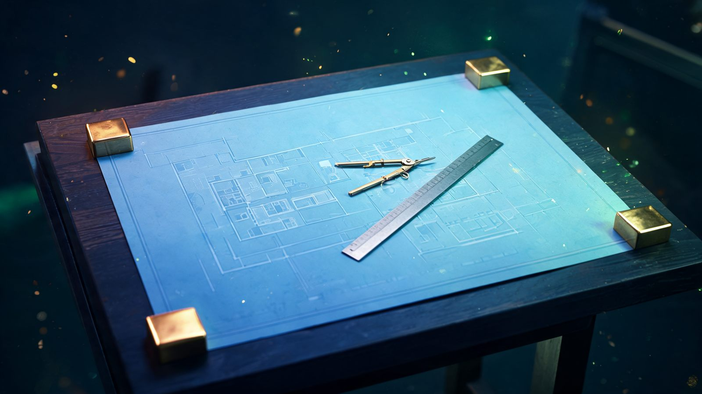

Analysis Paralysis in Trading: How to Break It
Every indicator you add is another condition that has to agree. Eventually nothing qualifies.
Patience in Trading: Why Doing Nothing Is a Position
Waiting is the only decision in trading that costs nothing when you are wrong about it.
How Professional Traders Think About Being Wrong
A single trade cannot tell you whether the decision was good. The winners can be the dangerous ones.
FOMO in Trading: How to Stop Chasing Candles
Chasing is not a feelings problem. It hands you a worse trade in the same idea.
How to Handle a Big Trading Loss Without Spiralling
The money is gone when the trade closes. The rest of the damage is optional.
Why You Cut Winners Early and Let Losers Run
One bias, two symptoms — and it wrecks your reward-to-risk while your win rate looks fine.
Revenge Trading: Why It Happens and How to Stop
The loss is already sunk. The next trade is the one that decides the day.

Trading Psychology: Why Discipline Beats Analysis
You probably don't have an analysis problem. You have an execution problem.
Why Futures Traders Watch the Cash Open
Futures run all night. The market underneath them opens at 9:30.
Futures Margin: Day vs Overnight
Day margin is your broker's number. Overnight margin was always the real one.
How to Trade ES Futures
$50 a point, $12.50 a tick. Learn the arithmetic before the chart — then size honestly.
Futures Contract Rollover
Every contract expires. Trade where the volume went, not where the habit is.
Futures Trading Guide
Read the contract specs before the chart. Margin is a performance bond, not a loan.
E-mini vs Micro E-mini Futures
A Micro is one tenth of an E-mini. Same book, same expiry, a tenth the dollars per point.
Tick Value and Futures P&L
Multiplier times tick size. Run it backwards and your stop sets the contract count.
How to Trade the London Open
Mark the Asian range, let the first fifteen minutes resolve, then take the break that holds.
Major, Minor and Exotic Pairs
The three tiers are a liquidity ranking, and liquidity is what quietly sets your costs.
Forex Leverage Explained
At 500:1 your whole margin sits inside a 22 pip move. Why the caps exist at 30:1.
What Is the Spread in Forex?
Trivial per trade, $1,500 a year at five trades a day. The cost nobody puts on a statement.
What Is Swap in Forex?
Interest charged every night you hold. Where it comes from, and why Wednesday costs triple.
How News Events Move Forex Pairs
Price trades the surprise, not the number — and bad news lands harder than good.

What Is a Pip, and What Is It Worth?
A pip is a unit of distance, not money. The two-line formula that converts one into the other.
Forex Sessions Explained
Four sessions, one overlap that carries the day — and why every session table is only half right.
Best Forex Pairs for Beginners
Ranked by real turnover data, not reputation — and why one pair beats five.
How to Mark Up a Chart Before the Session
Five levels, fifteen minutes, and every decision made before the bell.
What Is Market Structure?
Three states, one question. Name the sequence before you decide the trade.
Forex Trading Guide: How It Works
$9.6 trillion a day, no exchange, 24 hours. What that means for a small account.
Chart Patterns: Flags, Triangles, Wedges
A pattern is a picture of a pause. The break decides the direction, not the shape.

Fibonacci Retracement, Without Overfitting
Draw enough lines and one is always near price. Use it as a filter, not a forecast.
Why Trading Indicators Lag
Lag is not a settings problem. It is the definition of an average — here is the fix.
Multi-Timeframe Analysis, Done Properly
The higher chart holds a veto, not a vote. Give each chart one job and the contradictions vanish.
Supply & Demand Zones vs Support
Same truth, wider brush. Keep the honesty about imprecision, refuse the escape hatch.
What Is a Liquidity Grab? Stop Hunts
Nobody is hunting you. Your stop is just parked in the most crowded spot on the chart.
What Is MACD, and What It Tells You
A speedometer, not a map. The histogram is the part worth watching, not the cross.

Volume Analysis: What It Confirms
Volume is a vote count, not a vote. It tells you turnout, never which side won.
What Is VWAP, and Why Traders Watch It
The one line on your chart that institutions are formally graded against.
How to Draw a Trendline Correctly
Two points draw it, the third touch validates it. If you have to force the fit, it isn't there.
Moving Averages Explained
SMA vs EMA, which periods matter, and why the lag you keep fighting is the entire point.
What Is RSI, and How to Use It
Overbought means strong, not finished. Read the band the indicator lives in instead.
Overnight & Weekend Gap Risk
The US market is shut for 81% of the week. Your stop does not work while it is closed.
How to Scale Up Position Size Safely
Raise the fraction in quarter-steps, on evidence. Doubling is what ends working accounts.
Daily Loss Limits: Set One, Respect It
Markets halt themselves at a 7% fall. Your account deserves the same circuit breaker.
Technical Analysis Basics: What Matters
Four things carry nearly all the weight. The indicators on top mostly restate them.
How to Read a Candlestick Chart
Body is control, wick is failure, close is the verdict. Four numbers, nothing more.
Candlestick Patterns Worth Knowing
Four earn their place. Tested as standalone signals, the research found no value.
What Is a Breakout? Real vs Fake
Most of what gets called a breakout is a wick. The close is what decides it.
Break & Hold: Confirmation Beats Chasing
A worse entry, bought on purpose. Here is exactly what it costs and what it buys.
What Is a Retest in Trading?
Broken resistance becomes support. A tighter stop — and the ones you will miss.
Expectancy: The One Formula That Matters
Two systems, one wins 65% and one wins 35%. The second is worth five times more per trade.
Why Win Rate Is the Most Overrated Number
The breakeven table by reward-to-risk, and why your exits set the percentage, not your edge.

How to Survive a Losing Streak
How often six losses in a row is expected at your win rate, and the rules that cap the damage.
Correlation Risk: Five Trades, One Bet
The dollar sits on one side of 89% of FX trades. Your diversification may be an illusion.
Position Sizing for a Small Account
When 1% of your account is smaller than one contract. The minimum-risk table by instrument.
Position Sizing From Risk, Not Conviction
One division problem in the right order. Worked through for stocks, forex and futures.
Risk of Ruin: The Math Nobody Shows You
The same edge, sized two ways: a 45% chance of ruin or a 0.03% one. The table that shows why.
Drawdown Explained: How Much Is Normal?
A 50% fall needs a 100% gain to undo. The recovery table, and how to write a stopping rule.
What Is a Trailing Stop?
Three ways to trail, when it helps, and the two habits that turn winning trades into scratches.
How to Take Partial Profits
Scaling out trades expectancy for consistency. Three plans compared, priced in R.
Risk Management in Trading
The five layers — risk per trade, invalidation, sizing, daily caps, drawdown rules — and what each one catches.
The 1% Rule in Trading
Not caution — survival arithmetic. What the 1% actually caps, and when it is the wrong number.
How to Set a Stop Loss That Isn't a Guess
Four placement methods compared, why wide stops aren't risky, and what a stop order does not guarantee.
What Is Invalidation in Trading?
A stop is the order. Invalidation is the reason it exists. The three forms, and why sunk cost breaks both.
Why Most New Traders Quit in the First Year
The account runs out of runway before the skill arrives. Five reasons, and what keeps people in.
What Is Leverage in Trading?
The regulatory caps by market, the drawdown math, and why your real leverage should fall out of your stop.
What Is a Margin Call?
The 50% and 25% rules that trigger one, why your broker can sell without notice, and the six habits that prevent it.
10 Mistakes That Blow Up New Accounts
Accounts rarely die from bad analysis. The ten process failures that kill them, and the fix for each.

How to Build a Trading Plan You'll Follow
The eight sections that matter, and why if-then rules survive a live market when good intentions don't.
What Is a Trading Journal?
The twelve fields worth logging, the metrics that mean something, and the bias a record is built to catch.
Best Time of Day to Trade
Stock, futures and forex sessions hour by hour — where the volume sits, and the window a beginner should start in.
How Many Trades a Day Should a Beginner Take?
Fewer than you think. Why a cap beats a target, and what the research says about trading often.
Do You Need a License to Day Trade?
No — not for your own account. What the securities exams actually license, and where the line really is.
Day Trading Taxes: What New Traders Get Wrong
The $3,000 loss ceiling, wash sales, and why trader status is not something you simply declare.
How to Choose a Broker for Day Trading
Registration, real cost per round trip, execution under load, market fit. Platform features come last.
What Percentage of Day Traders Are Profitable?
97% and under 1% — the real figures from two regulator-data studies, and why the 90% claim has no source.

Is Day Trading Gambling?
Four tests that decide which side of the line you are on — and the psychology that keeps blurring it.
Day Trading for Beginners: The First 30 Days
One market, then levels, then a simulator, then the smallest live size — month one, week by week.
How Long to Become a Profitable Trader?
Why no honest timeline exists, what the research says about learning, and the milestones that replace months.
Can You Day Trade With $500?
Legal in most markets, workable in almost none — the cost-to-risk math that decides it, and what $500 is good for.

The Pattern Day Trader Rule in 2026
FINRA retired the $25,000 gate on June 4, 2026 — what replaced it, and why your broker may still enforce it.
How to Start Day Trading
The eight steps in the order that works, what each stage really takes, and what to skip entirely.
How Much Money Do You Need to Start?
The regulatory, practical and survivable minimums are three different numbers. How to find yours.
Trading Courses vs Trading Rooms
Courses teach concepts faster, rooms teach application faster — and each fails in its own way.
Full-Time vs Part-Time Trading
What each demands in capital and hours, and why drawing income changes every decision you make.
Are Prop Firm Challenges Worth It?
What the published pass rates really say, the true cost across attempts, and when an evaluation makes sense.
Forex vs Futures for a New Day Trader
Counterparty, costs, leverage caps and hours — the structural differences that actually decide it.
Forex vs Stocks for Day Trading
The $25,000 pattern day trader rule, session hours, leverage caps and where the costs actually hide.
Paper Trading vs Live Trading
What a demo genuinely proves, the four things it cannot simulate, and how to bridge the gap safely.
Self-Taught vs Joining a Trading Room
What each path costs in money, time and drawdown — and when learning alone is the better call.
Do Trading Communities Work for Beginners?
What a room genuinely accelerates for a new trader, the four things it cannot do, and when to wait.
What a Trading Callout Should Contain
The five required fields, why invalidation is the one that goes missing, and how to grade a call.
How to Tell If a Room's Results Are Real
The six ways a track record gets flattered, the evidence hierarchy, and a 20-minute audit anyone can run.
Scalping vs Day Trading
Tempo, transaction costs and temperament compared — plus the 2026 change to US intraday margin rules.
Prop Firm vs Trading Your Own Capital
What an evaluation really buys, the drawdown rules that end most accounts, and who each path suits.

Day Trading Community: What a Good One Does
Process, feedback and accountability. What a real trading room gives you, and the four things it never can.

Best Day Trading Discord Servers: Signal vs Noise
The five kinds of trading Discord, eight markers of a real room, and how to verify one before you pay.

Are Trading Discord Groups Worth It?
An honest cost-benefit look: what a subscription really buys, when it makes sense, and when it plainly does not.

How to Find a Legit Trading Community
A five-step legitimacy check, the seven red flags worth walking away from, and where to verify an operator.

Free vs Paid Trading Communities
What each tier actually gives you, what free rooms structurally cannot do, and the hidden costs of free.

What Should a Trading Community Cost?
The real price bands, the account-size test that decides affordability, and the costs nobody lists.

Trading Alerts vs Trading Education
What each one buys you, why alerts breed dependency, and how to tell which a room is really selling.

Are Trade Alerts Worth Paying For?
The execution gap, slippage and sizing problems nobody mentions, plus the break-even maths.

Trading Mentorship: Real vs Sold
What a mentor actually does, the six things to demand, and how to spot a sales funnel first.

Swing Trading Communities With a Day Job
Why live rooms fail a working trader, what a swing room must do asynchronously, and what to ask.

Trading Discord vs Telegram vs Private Forum
How each format handles archives, timestamps and exit risk — and the four things that matter more.

Questions to Ask Before Joining a Trading Room
Twelve questions, what a good answer sounds like, and the four evasions that end the conversation.

Why Most Trading Groups Fail Their Members
Six structural reasons rooms stop working, the base rate behind them, and what to demand instead.

Trading Signals Explained: How They Work
What a signal contains, where the delivery chain leaks its edge, and who is allowed to sell one.

Copy Trading vs Learning to Trade
What each costs over five years, why copied returns decay, and the honest case for both paths.

Lot Size & Position Size Calculator
Free calculator: enter your account, risk % and stop in pips to get the exact lot size to trade.

Risk-to-Reward Ratio: How to Use It
Why R:R matters more than win rate, how to set targets and stops, and the math that keeps you in the game.

Support & Resistance: Finding Real Levels
How to mark levels that actually matter, why most traders draw them wrong, and the break-and-hold rule.

What Is a Lot Size in Trading?
Standard, mini and micro lots explained, and why position size is the first risk decision you make.

Heikin Ashi Candles: How They Work
What Heikin Ashi candles are, how they are calculated, and how to read trend and exhaustion with them.

Day Trading vs Swing Trading
The real differences in time, capital and stress, and how to pick the style that fits your life.
No articles match that search yet. Try another term.